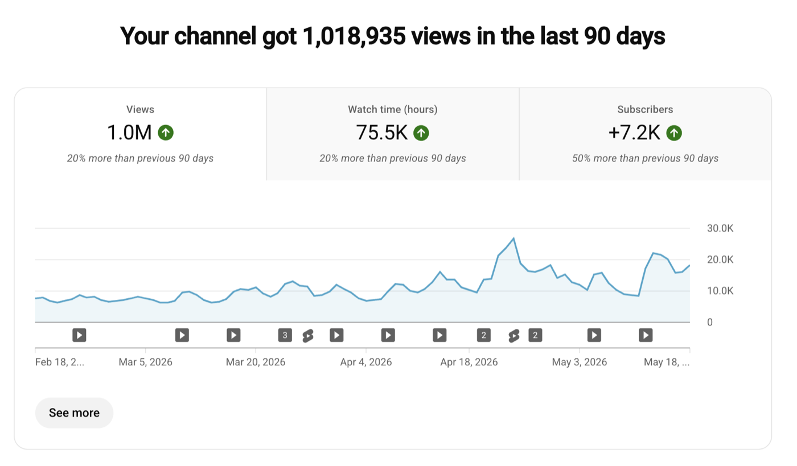
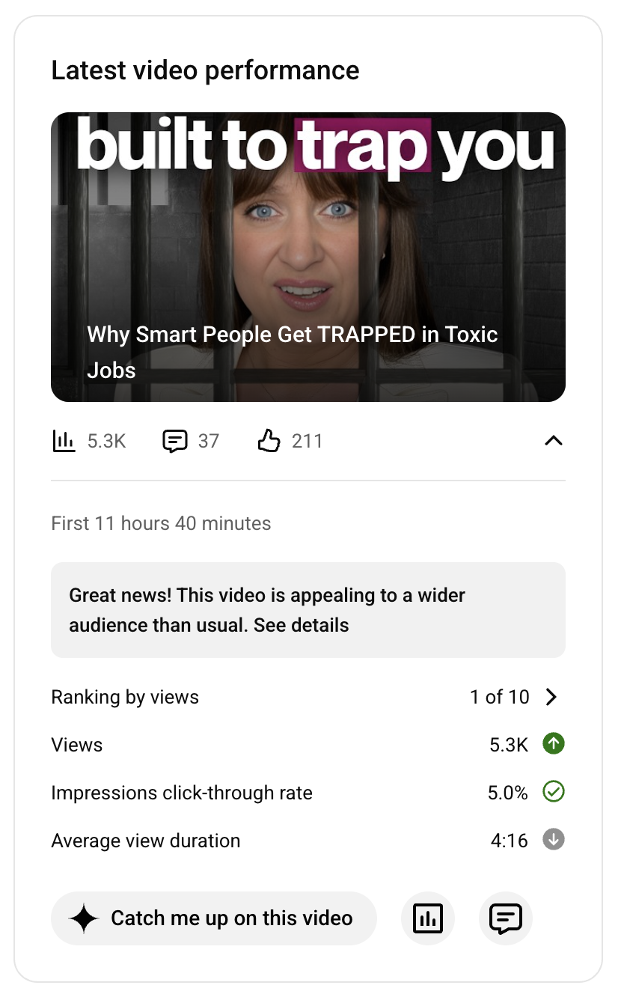

Case study
How Jennifer turned a “nightmare” editing process into more views, more subscribers and one hour a week.
From 10+ hours a week trapped in edits and two-week turnarounds, to 1M views in 90 days, faster publishing, and the time to launch new products. In her words, with her own YouTube Studio screens.
Jennifer BrickThe Corporate Criminologist · 177,000 subscribers
Before
“Before I started working with Tyron, my editing process was a nightmare. It got so bad that I almost stopped making videos! My prior agency’s turnaround time was +2 weeks, the quality was degrading over time, and I was spending more than 10 hours a week preparing editing instructions, reviewing videos, and cycling through multiple rounds of revisions when instructions weren’t followed.”
“To keep going, I needed to find an editing partner who would not only elevate the quality of my videos but who would free up my time.”
What changed
“Working with Tyron, the impact was immediate. He instantly elevated the quality of my channel. The first thing I noticed was the AVD lift in videos. More meaningfully, the increased quality has helped me reach larger audiences, increasing my average views per video and driving revenue.”



Her time back
“I’m now spending an hour max each week, and each video is getting better and better.”
With the time freed up, Jennifer says she has:
- Prepared the launch of a new product.
- Grown her email list by thousands.
- Written a 100-page ebook and turned it into an audiobook.
- Gone from two videos a month to four, and restarted her TikTok and Instagram.
“If you’re an Educational Creator who wants to stop thinking about editing, produce top tier videos, and produce content that engages and converts, you seriously need to hire Tyron. You will not regret it.”
These are Jennifer’s own numbers and words. Every channel is different, and I do not promise results. What I promise is the work: four videos a month, on time, in your look.